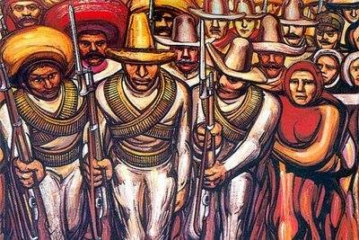

Causas que originaron el movimiento
de la Revolucion en 1910

El envejecimiento del sistema, manifestado en la prolongada permanencia de Díaz en el poder, así como en la inmovilidad del gabinete porfirista ( el ministro más joven tenía 60 años de edad y por lo menos, 20 años en el puesto ) de la misma forma los diputados y senadores , gobernadores y demás puestos administrativos de distintos niveles, fueron ocupados por elementos fieles al régimen, limitando los espacios requeridos, para su consolidación como clase social, por la cada vez más numerosa clase media.
El incumplimiento, primero de las declaraciones hechas por Díaz a la revista Pearsons Magassine ( Entrevista Díaz-Creelman ) y publicadas en 1909, en las cuales Díaz aseguraba que no participaría en el proceso electoral de 1910, y posteriormente el fraude cometido en dicho proceso y su posterior reelección, que anunciaba claramente la falta de voluntad política de Díaz para impulsar un cambio democrático.
La influencia de diversas corrientes ideológicas opuestas al gobierno porfirista; sobre todo el anarquismo, manifiesto en el movimiento magonista a través del Programa del Partido Liberal, publicado en 1906, el cual proponía cambios políticos y reivindicaciones para los trabajadores.
Causas económicas.
Inconformidad de los pequeños empresarios dedicados a labores comerciales, agrícolas e industriales, inconformes con el manejo que la oligarquía de los científicos, hacía de los créditos bancarios, pues en muchas ocasiones los destinaba a financiar sus propios proyectos.
Otra razón que motivó también la inconformidad de la clase media emprendedora, eran los efectos que la tienda de raya tenía en el desarrollo del capitalismo, pues al limitar el intercambio dinero–mercancías, dificultaba el crecimiento del mercado interno.
El reparto inequitativo de los beneficios económicos entre el grupo oligárquico sostenedor del régimen y los grupos medios, que veían en la estructura política y económica de porfirismo, una limitante a sus aspiraciones de crecimiento.
Causas Sociales.
El descontento de los campesinos causado por el despojo de tierras, que de manera sistemática se venía dando desde 1883, en que se empezó a aplicarse la ley de deslinde y colonización de tierras baldías, y aunque su aplicación fue suspendida en 1808, sus efectos resultaron catastróficos para la mayoría de los poseedores de tierras que no pudieron comprobar por medio de títulos, la legítima posesión de sus terrenos, que perdieron a manos de las compañías deslindadoras, incrementándose el latifundismo iniciado desde los tiempos de la reforma liberal.
La sobreexplotación del trabajo asalariado en minas, fábricas y haciendas, causante de numerosas huelgas, en los últimos años de la dictadura porfirista, que preparaba los ánimos para una revuelta de alcances mayores.
El descontento en el sector laboral causado por la política discriminatoria aplicada contra los trabajadores mexicanos, quienes recibían un salario menor que los empleados extranjeros dedicados a las mismas labores.
